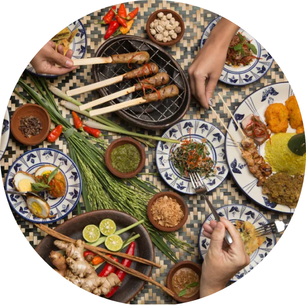

History of Indonesian Food

Due to its beneficial geographic location, Indonesia has attracted many traders, pirates and adventurers from all over the world. Our archipelago was most known for rich resources of spices, especially in the eastern region, and these spice-hunters soon turned into immigrants and permanent dwellers.
Not only known as spice producers, Indonesia also welcomed a wide array of exotic foods from around the globe. Most of these latest-recipes were brought in by traders and Hindu missionaries from India, Europe to the Middle East. As such, Indonesia has a great global influence, even right from the start.